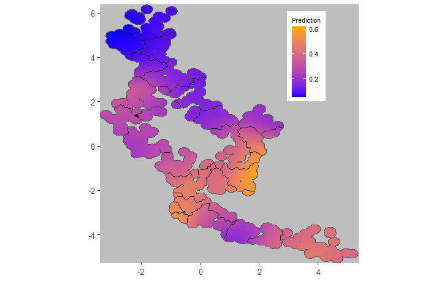
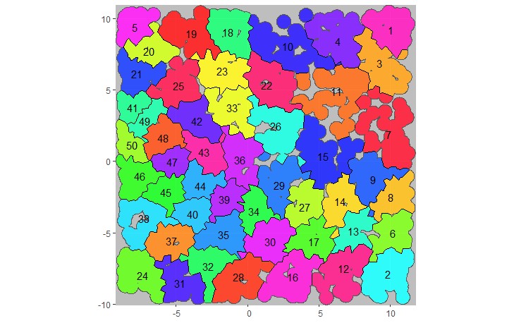

Use Case 02: Simulation of trials with geographical spillover
Usecase2.RmdEffects of settlement patterns, choices of cluster size and buffer widths, and the extent of spillover between arms on the outcomes of CRTs do not lend themselves to mathematical analysis. Simulations of trials are used to explore the effects of these variables on trial power and on the robustness of statistical methodologies.
Trials can be simulated using the simulateCRT function,
which augments a trial data frame (created externally) or
object of class CRTsp (created by package functions) with
simulated outcome data. The input object must be given location
information and both cluster and arm assignments (see Use Case 1) (or the package can generate these
if the objective is purely simulation.
Information about the underlying spatial pattern of disease is used
in the form of the intra-cluster correlation of the outcome, which is
input to the simulation as variable ICC_inp, and of the
propensity. The former takes a single value for the chosen
design. The latter takes a positive real value for each location. In the
case of malaria, propensity can be thought of as measuring
exposure to infectious mosquitoes.
ICC_inp and propensity may either be
estimated from other datasets or supplied by the user. The behaviour of
the function depends on which variables are supplied, and the value of
generateBaseline, as follows:
| Data supplied by the user | Function behaviour |
|---|---|
propensity supplied by user |
Baseline data are created by sampling around
propensity
|
Baseline data are supplied by user and
propensity is not supplied |
propensity is created from the baseline
data |
Neither baseline data nor propensity are
supplied |
propensity is generated using normal
kernels, with the bandwidth adjusted to achieve the input value of the
ICC_inp (after the further smoothing stage to simulate
spillover (see below)) |
The effect of intervention is simulated as a fixed percentage
reduction in the propensity. Contamination or spillover
between trial arms is then modelled as a additional smoothing process
applied to the intervention-adjusted propensity via a
further bivariate normal kernel. In the case of mosquito borne disease
this is proposed as an approximation to the effect of mosquito movement.
The degree of spillover is specified either as a spillover interval with
the spillover_interval parameter, or as sd,
the bandwidth of the corresponding normal kernel. If both are provided
then it is the value of spillover_interval that is
used.
Example with baseline data provided as proportions
library(CRTspat)
set.seed(1234)
example_locations <- readdata('example_site.csv')
example_locations$base_denom <- 1
library(dplyr)
example_randomized <- CRTsp(example_locations) %>%
aggregateCRT(auxiliaries = c("RDT_test_result", "base_denom")) %>%
specify_clusters(h = 50, algorithm = 'NN') %>%
randomizeCRT(matchedPair = FALSE)
summary(example_randomized)## ===============================CLUSTER RANDOMISED TRIAL ===========================
##
## Summary of coordinates
## ----------------------
## Min. : 1st Qu.: Median : Mean : 3rd Qu.: Max. :
## x -3.20 -1.40 -0.30 -0.07 1.26 5.16
## y -5.08 -2.84 0.19 0.05 2.49 6.16
## nearestDiscord -3.47 -0.49 0.04 0.14 0.74 3.30
##
## Total area (within 0.2 km of a location) : 27.6 sq.km
## Total area (convex hull) : 48.2 sq.km
##
## Locations and Clusters
## ---------------------- -
## Coordinate system (x, y)
## Locations: 1181
## Available clusters (across both arms) 24
## Per cluster mean number of points 49.2
## Per cluster s.d. number of points 3.9
## Cluster randomization: Independently randomized
## No power calculations to report -
##
## Other variables in dataset
## -------------------------- RDT_test_result base_denom
plotCRT(example_randomized, map = TRUE, legend.position = c(0.8, 0.8))
example2a <- simulateCRT(example_randomized,
effect = 0.8,
outcome0 = 0.5,
generateBaseline = FALSE,
baselineNumerator = "RDT_test_result",
baselineDenominator = "base_denom",
ICC_inp = 0.05, spillover_interval = 0.8)
summary(example2a)## ===============================CLUSTER RANDOMISED TRIAL ===========================
##
## Summary of coordinates
## ----------------------
## Min. : 1st Qu.: Median : Mean : 3rd Qu.: Max. :
## x -3.20 -1.40 -0.30 -0.07 1.26 5.16
## y -5.08 -2.84 0.19 0.05 2.49 6.16
## nearestDiscord -3.47 -0.49 0.04 0.14 0.74 3.30
##
## Total area (within 0.2 km of a location) : 27.6 sq.km
## Total area (convex hull) : 48.2 sq.km
##
## Locations and Clusters
## ---------------------- -
## Coordinate system (x, y)
## Locations: 1181
## Available clusters (across both arms) 24
## Per cluster mean number of points 49.2
## Per cluster s.d. number of points 3.9
## Cluster randomization: Independently randomized
## No power calculations to report -
##
## Other variables in dataset
## -------------------------- RDT_test_result base_denom denom propensity num
library(Matrix)
examplemesh100 <- readdata("examplemesh100.rds")
example2aanalysis <- CRTanalysis(trial=example2a, method = 'T')
summary(example2aanalysis)##
## =====================CLUSTER RANDOMISED TRIAL ANALYSIS =================
## Analysis method: T
## Link function: logit
## Model formula: arm + (1 | cluster)
## No modelling of spillover
## Estimates: Control: 0.411 (95% CL: 0.281 0.554 )
## Intervention: 0.191 (95% CL: 0.162 0.223 )
## Efficacy: 0.535 (95% CL: 0.399 0.81 )
## Coefficient of variation: 45.3 % (95% CL: 33.8 69.9 )
##
## P-value (2-sided): 0.0007466708
plotCRT(example2aanalysis)
example2aINLA <- CRTanalysis(trial=example2a,
method = 'INLA', link='logit', cfunc = 'Z',
clusterEffects = FALSE, spatialEffects = TRUE,
requireMesh = TRUE, inla_mesh = examplemesh100)
plotCRT(example2aINLA, map = TRUE, fill = 'prediction',
showClusterBoundaries = TRUE, legend.position = c(0.8, 0.8))

Fig 2.1 Map of allocations of
clusters to arms

Fig 2.2 Plot of data by distance
to other arm

Fig 2.3 Smoothed outcome from
geostatistical model
Example with infectiousness proxy surface generated externally
set.seed(1234)
# Simulate a site with 2000 locations
new_site <- CRTsp(geoscale = 2, locations=2000, kappa=3, mu=40)
# propensity surface generated as an arbitrary linear function of x the co-ordinate
new_site$trial$propensity <- 0.5*new_site$trial$x - min(new_site$trial$x)+1
library(dplyr)
example2b<- CRTsp(new_site) %>%
specify_clusters(h = 40, algorithm = 'NN') %>%
randomizeCRT(matchedPair = FALSE) %>%
simulateCRT(effect = 0.8,
outcome0 = 0.5,
generateBaseline = TRUE,
ICC_inp = 0.05,
spillover_interval = 0.5)##
## ===================== SIMULATION OF CLUSTER RANDOMISED TRIAL =================## *** computed distance to nearest measurements in discordant arm ***## Estimating the smoothing required to achieve the target ICC of 0.05##
bandwidth: 0.329192987807905 ICC = 0.0592398229682629 loss = 8.53743284848379e-05
summary(example2b)## ===============================CLUSTER RANDOMISED TRIAL ===========================
##
## Summary of coordinates
## ----------------------
## Min. : 1st Qu.: Median : Mean : 3rd Qu.: Max. :
## x -8.73 -5.16 -1.03 0.00 5.17 11.26
## y -9.55 -4.42 -0.58 0.00 4.56 10.45
## nearestDiscord -4.20 -0.93 0.00 0.03 0.96 3.94
##
## Total area (within 0.2 km of a location) : 181 sq.km
## Total area (convex hull) : 396 sq.km
##
## Locations and Clusters
## ---------------------- -
## Coordinate system (x, y)
## Locations: 2000
## Available clusters (across both arms) 50
## Per cluster mean number of points 40
## Per cluster s.d. number of points 0
## Cluster randomization: Independently randomized
## No power calculations to report -
##
## Other variables in dataset
## -------------------------- denom propensity num base_denom base_num
results2b <- CRTanalysis(example2b, method = 'GEE')## No non-linear parameter. No fixed effects of distance -
summary(results2b)##
## =====================CLUSTER RANDOMISED TRIAL ANALYSIS =================
## Analysis method: GEE
## Link function: logit
## Model formula: arm
## No modelling of spillover
## Estimates: Control: 0.461 (95% CL: 0.394 0.529 )
## Intervention: 0.139 (95% CL: 0.112 0.171 )
## Efficacy: 0.698 (95% CL: 0.614 0.766 )
## Coefficient of variation: 44.7 % (95% CL: 36.2 58.8 )
## Intracluster correlation (ICC) : 0.0592 (95% CL: 0.0271 0.0914 )
##
plotCRT(example2b, map = TRUE, fill = 'clusters', showClusterLabels = TRUE, maskbuffer = 0.5)

Fig 2.4 Map of clusters in
simulated trial
Example with baseline generated from user-provided values of the overall initial prevalence and ICC
set.seed(1234)
# use co-ordinates, cluster and arm assignments, and baseline data from `example_simulated`
example2c<- CRTsp(geoscale = 2, locations=2000, kappa=3, mu=40) %>%
specify_clusters(h = 40, algorithm = 'NN') %>%
randomizeCRT(matchedPair = FALSE) %>%
simulateCRT(effect = 0.8,
outcome0 = 0.5,
generateBaseline = TRUE,
baselineNumerator = 'base_num',
baselineDenominator = 'base_denom',
ICC_inp = 0.08,
spillover_interval = 0.2)##
## ===================== SIMULATION OF CLUSTER RANDOMISED TRIAL =================## *** computed distance to nearest measurements in discordant arm ***## Estimating the smoothing required to achieve the target ICC of 0.08##
bandwidth: 0.0356739933472524 ICC = 0.0824159572906405 loss = 5.83684963019902e-06
results2c <- CRTanalysis(example2c, method = 'GEE')## No non-linear parameter. No fixed effects of distance -
summary(results2c)##
## =====================CLUSTER RANDOMISED TRIAL ANALYSIS =================
## Analysis method: GEE
## Link function: logit
## Model formula: arm
## No modelling of spillover
## Estimates: Control: 0.339 (95% CL: 0.272 0.414 )
## Intervention: 0.261 (95% CL: 0.22 0.306 )
## Efficacy: 0.23 (95% CL: -0.00815 0.409 )
## Coefficient of variation: 50.7 % (95% CL: 40.7 67.7 )
## Intracluster correlation (ICC) : 0.0824 (95% CL: 0.046 0.119 )
##